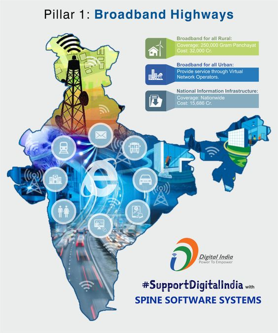

Welcome to the Future of Vikshit Bharat
As India strives to achieve its ambitious vision of becoming a Vikshit Bharat (developed India) by 2047, Artificial Intelligence (AI) is emerging as a powerful tool for accelerating and transforming its development journey. This introductory section sets the stage for exploring the multifaceted ways AI can contribute to this national aspiration.
 What is Vikshit Bharat?Vikshit Bharat translates to "developed India" and embodies the nation's vision to achieve:
Economic prosperity: A robust, knowledge-based economy with sustainable growth and improved living standards for all citizens.
Social inclusion: An equitable society where every individual has equal opportunities to access education, healthcare, and other essential services.
Technological advancement: Leveraging cutting-edge technologies like AI to drive innovation and solve critical development challenges.
Why is AI crucial for Vikshit Bharat?The rapid advancements in AI present a unique opportunity for India to:
Revolutionize existing industries: AI-powered solutions can improve efficiency, optimize resource utilization, and enhance productivity across various sectors.
Address complex challenges: AI can analyze vast amounts of data to identify patterns, predict future trends, and develop innovative solutions to critical issues like climate change, poverty, and healthcare access.
Empower citizens: AI has the potential to personalize services, bridge the digital divide, and create a more inclusive and equitable society.